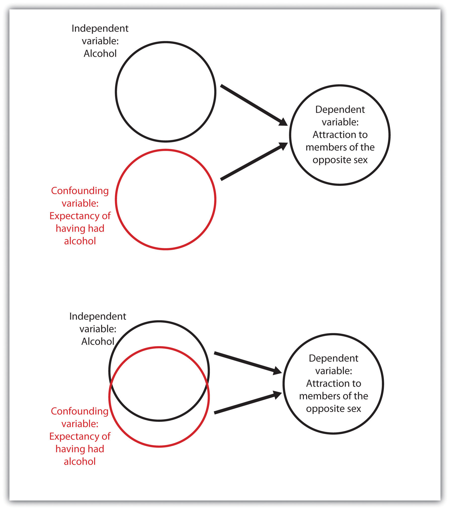
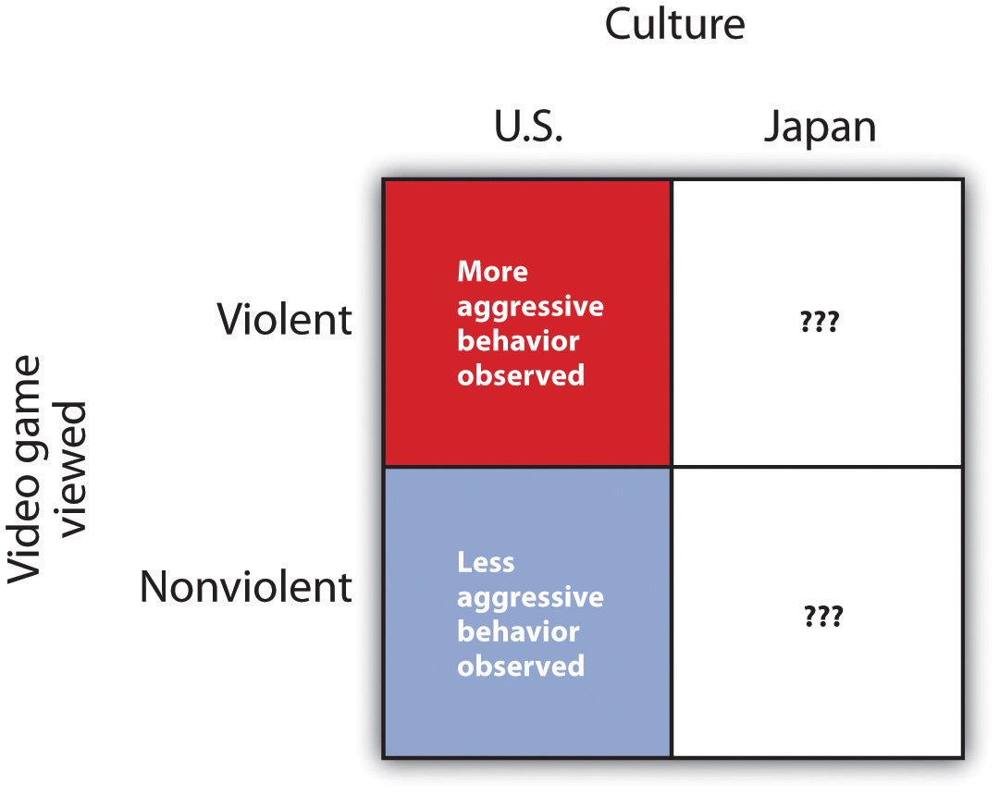

Good research is valid research. When research is valid, the conclusions drawn by the researcher are legitimate. For instance, if a researcher concludes that participating in psychotherapy reduces anxiety, or that taller people are smarter than shorter people, the research is valid only if the therapy really works or if taller people really are smarter. Unfortunately, there are many threats to the validity of research, and these threats may sometimes lead to unwarranted conclusions. Often, and despite researchers’ best intentions, some of the research reported on websites as well as in newspapers, magazines, and even scientific journals is invalid. Validity is not an all-or-nothing proposition, which means that some research is more valid than other research. Only by understanding the potential threats to validity will you be able to make knowledgeable decisions about the conclusions that can or cannot be drawn from a research project. There are four major types of threats to the validity of research, and informed consumers of research are aware of each type.
One threat to valid research occurs when there is a threat to construct validity. Construct validityThe extent to which the variables used in the research adequately assess the conceptual variables they were designed to measure. refers to the extent to which the variables used in the research adequately assess the conceptual variables they were designed to measure. One requirement for construct validity is that the measure be reliable, where reliabilityThe consistency of a measured variable. refers to the consistency of a measured variable. A bathroom scale is usually reliable, because if we step on and off it a couple of times the scale will consistently measure the same weight every time. Other measures, including some psychological tests, may be less reliable, and thus less useful.
Normally, we can assume that the researchers have done their best to assure the construct validity of their measures, but it is not inappropriate for you, as an informed consumer of research, to question this. It is always important to remember that the ability to learn about the relationship between the conceptual variables in a research hypothesis is dependent on the operational definitions of the measured variables. If the measures do not really measure the conceptual variables that they are designed to assess (e.g., if a supposed IQ test does not really measure intelligence), then they cannot be used to draw inferences about the relationship between the conceptual variables (Nunnally, 1978).Nunnally, J. C. (1978). Pyschometric theory. New York, NY: McGraw-Hill.
The statistical methods that scientists use to test their research hypotheses are based on probability estimates. You will see statements in research reports indicating that the results were “statistically significant” or “not statistically significant.” These statements will be accompanied by statistical tests, often including statements such as “p < 0.05” or about confidence intervals. These statements describe the statistical significance of the data that have been collected. Statistical significanceThe confidence with which we can conclude that data are not due to chance or random error. refers to the confidence with which a scientist can conclude that data are not due to chance or random error. When a researcher concludes that a result is statistically significant, he or she has determined that the observed data was very unlikely to have been caused by chance factors alone. Hence, there is likely a real relationship between or among the variables in the research design. Otherwise, the researcher concludes that the results were not statistically significant.
Statistical conclusion validityThe extent to which we can be certain that the researcher has drawn accurate conclusions about the statistical significance of the research. refers to the extent to which we can be certain that the researcher has drawn accurate conclusions about the statistical significance of the research. Research will be invalid if the conclusions made about the research hypothesis are incorrect because statistical inferences about the collected data are in error. These errors can occur either because the scientist inappropriately infers that the data do support the research hypothesis when in fact they are due to chance, or when the researcher mistakenly fails to find support for the research hypothesis. Normally, we can assume that the researchers have done their best to ensure the statistical conclusion validity of a research design, but we must always keep in mind that inferences about data are probabilistic and never certain—this is why research never “proves” a theory.
Internal validityThe extent to which we can trust the conclusions that have been drawn about the causal relationship between the independent and dependent variables. refers to the extent to which we can trust the conclusions that have been drawn about the causal relationship between the independent and dependent variables (Campbell & Stanley, 1963).Campbell, D. T., & Stanley, J. C. (1963). Experimental and quasi-experimental designs for research. Chicago: Rand McNally. Internal validity applies primarily to experimental research designs, in which the researcher hopes to conclude that the independent variable has caused the dependent variable. Internal validity is maximized when the research is free from the presence of confounding variablesA variable other than the independent variable on which the participants in one experimental condition differ systematically from those in other conditions.—variables other than the independent variable on which the participants in one experimental condition differ systematically from those in other conditions.
Consider an experiment in which a researcher tested the hypothesis that drinking alcohol makes members of the opposite sex look more attractive. Participants older than 21 years of age were randomly assigned either to drink orange juice mixed with vodka or to drink orange juice alone. To eliminate the need for deception, the participants were told whether or not their drinks contained vodka. After enough time had passed for the alcohol to take effect, the participants were asked to rate the attractiveness of pictures of members of the opposite sex. The results of the experiment showed that, as predicted, the participants who drank the vodka rated the photos as significantly more attractive.
If you think about this experiment for a minute, it may occur to you that although the researcher wanted to draw the conclusion that the alcohol caused the differences in perceived attractiveness, the expectation of having consumed alcohol is confounded with the presence of alcohol. That is, the people who drank alcohol also knew they drank alcohol, and those who did not drink alcohol knew they did not. It is possible that simply knowing that they were drinking alcohol, rather than the effect of the alcohol itself, may have caused the differences (see Figure 2.18 "An Example of Confounding"). One solution to the problem of potential expectancy effects is to tell both groups that they are drinking orange juice and vodka but really give alcohol to only half of the participants (it is possible to do this because vodka has very little smell or taste). If differences in perceived attractiveness are found, the experimenter could then confidently attribute them to the alcohol rather than to the expectancies about having consumed alcohol.
Figure 2.18 An Example of Confounding
Confounding occurs when a variable that is not part of the research hypothesis is “mixed up,” or confounded with, the variable in the research hypothesis. In the bottom panel alcohol consumed and alcohol expectancy are confounded, but in the top panel they are separate (independent). Confounding makes it impossible to be sure that the independent variable (rather than the confounding variable) caused the dependent variable.
Another threat to internal validity can occur when the experimenter knows the research hypothesis and also knows which experimental condition the participants are in. The outcome is the potential for experimenter biasA situation in which the experimenter subtly treats the research participants in the various experimental conditions differently, resulting in an invalid confirmation of the research hypothesis., a situation in which the experimenter subtly treats the research participants in the various experimental conditions differently, resulting in an invalid confirmation of the research hypothesis. In one study demonstrating experimenter bias, Rosenthal and Fode (1963)Rosenthal, R., & Fode, K. L. (1963). The effect of experimenter bias on the performance of the albino rat. Behavioral Science, 8, 183–189. sent twelve students to test a research hypothesis concerning maze learning in rats. Although it was not initially revealed to the students, they were actually the participants in an experiment. Six of the students were randomly told that the rats they would be testing had been bred to be highly intelligent, whereas the other six students were led to believe that the rats had been bred to be unintelligent. In reality there were no differences among the rats given to the two groups of students. When the students returned with their data, a startling result emerged. The rats run by students who expected them to be intelligent showed significantly better maze learning than the rats run by students who expected them to be unintelligent. Somehow the students’ expectations influenced their data. They evidently did something different when they tested the rats, perhaps subtly changing how they timed the maze running or how they treated the rats. And this experimenter bias probably occurred entirely out of their awareness.
To avoid experimenter bias, researchers frequently run experiments in which the researchers are blind to condition. This means that although the experimenters know the research hypotheses, they do not know which conditions the participants are assigned to. Experimenter bias cannot occur if the researcher is blind to condition. In a double-blind experimentAn experimental design in which both the researcher and the research participants are blind to condition., both the researcher and the research participants are blind to condition. For instance, in a double-blind trial of a drug, the researcher does not know whether the drug being given is the real drug or the ineffective placebo, and the patients also do not know which they are getting. Double-blind experiments eliminate the potential for experimenter effects and at the same time eliminate participant expectancy effects.
While internal validity refers to conclusions drawn about events that occurred within the experiment, external validityThe extent to which the results of a research design can be generalized beyond the specific way the original experiment was conducted. refers to the extent to which the results of a research design can be generalized beyond the specific way the original experiment was conducted. GeneralizationThe tendency to respond to stimuli that resemble the original conditioned stimulus. refers to the extent to which relationships among conceptual variables can be demonstrated in a wide variety of people and a wide variety of manipulated or measured variables.
Psychologists who use college students as participants in their research may be concerned about generalization, wondering if their research will generalize to people who are not college students. And researchers who study the behaviors of employees in one company may wonder whether the same findings would translate to other companies. Whenever there is reason to suspect that a result found for one sample of participants would not hold up for another sample, then research may be conducted with these other populations to test for generalization.
Recently, many psychologists have been interested in testing hypotheses about the extent to which a result will replicate across people from different cultures (Heine, 2010).Heine, S. J. (2010). Cultural psychology. In S. T. Fiske, D. T. Gilbert, & G. Lindzey (Eds.), Handbook of social psychology (5th ed., Vol. 2, pp. 1423–1464). Hoboken, NJ: John Wiley & Sons. For instance, a researcher might test whether the effects on aggression of viewing violent video games are the same for Japanese children as they are for American children by showing violent and nonviolent films to a sample of both Japanese and American schoolchildren. If the results are the same in both cultures, then we say that the results have generalized, but if they are different, then we have learned a limiting condition of the effect (see Figure 2.19 "A Cross-Cultural Replication").
Figure 2.19 A Cross-Cultural Replication
In a cross-cultural replication, external validity is observed if the same effects that have been found in one culture are replicated in another culture. If they are not replicated in the new culture, then a limiting condition of the original results is found.
Unless the researcher has a specific reason to believe that generalization will not hold, it is appropriate to assume that a result found in one population (even if that population is college students) will generalize to other populations. Because the investigator can never demonstrate that the research results generalize to all populations, it is not expected that the researcher will attempt to do so. Rather, the burden of proof rests on those who claim that a result will not generalize.
Because any single test of a research hypothesis will always be limited in terms of what it can show, important advances in science are never the result of a single research project. Advances occur through the accumulation of knowledge that comes from many different tests of the same theory or research hypothesis. These tests are conducted by different researchers using different research designs, participants, and operationalizations of the independent and dependent variables. The process of repeating previous research, which forms the basis of all scientific inquiry, is known as replicationThe process of repeating previous research..
Scientists often use a procedure known as meta-analysis to summarize replications of research findings. A meta-analysisA statistical technique that uses the results of existing studies to integrate and draw conclusions about those studies. is a statistical technique that uses the results of existing studies to integrate and draw conclusions about those studies. Because meta-analyses provide so much information, they are very popular and useful ways of summarizing research literature.
A meta-analysis provides a relatively objective method of reviewing research findings because it (1) specifies inclusion criteria that indicate exactly which studies will or will not be included in the analysis, (2) systematically searches for all studies that meet the inclusion criteria, and (3) provides an objective measure of the strength of observed relationships. Frequently, the researchers also include—if they can find them—studies that have not been published in journals.
The validity of research reports published in scientific journals is likely to be high because the hypotheses, methods, results, and conclusions of the research have been rigorously evaluated by other scientists, through peer review, before the research was published. For this reason, you will want to use peer-reviewed journal articles as your major source of information about psychological research.
Although research articles are the gold standard for validity, you may also need and desire to get at least some information from other sources. The Internet is a vast source of information from which you can learn about almost anything, including psychology. Search engines—such as Google or Yahoo!—bring hundreds or thousands of hits on a topic, and online encyclopedias, such as Wikipedia, provide articles about relevant topics.
Although you will naturally use the web to help you find information about fields such as psychology, you must also realize that it is important to carefully evaluate the validity of the information you get from the web. You must try to distinguish information that is based on empirical research from information that is based on opinion, and between valid and invalid data. The following material may be helpful to you in learning to make these distinctions.
The techniques for evaluating the validity of websites are similar to those that are applied to evaluating any other source of information. Ask first about the source of the information. Is the domain a “.com” (business), “.gov” (government), or “.org” (nonprofit) entity? This information can help you determine the author’s (or organization’s) purpose in publishing the website. Try to determine where the information is coming from. Is the data being summarized from objective sources, such as journal articles or academic or government agencies? Does it seem that the author is interpreting the information as objectively as possible, or is the data being interpreted to support a particular point of view? Consider what groups, individuals, and political or commercial interests stand to gain from the site. Is the website potentially part of an advocacy group whose web pages reflect the particular positions of the group? Material from any group’s site may be useful, but try to be aware of the group’s purposes and potential biases.
Also, ask whether or not the authors themselves appear to be a trustworthy source of information. Do they hold positions in an academic institution? Do they have peer-reviewed publications in scientific journals? Many useful web pages appear as part of organizational sites and reflect the work of that organization. You can be more certain of the validity of the information if it is sponsored by a professional organization, such as the American Psychological Association or the American Psychological Society.
Try to check on the accuracy of the material and discern whether the sources of information seem current. Is the information cited such that you can read it in its original form? Reputable websites will probably link to other reputable sources, such as journal articles and scholarly books. Try to check the accuracy of the information by reading at least some of these sources yourself.
It is fair to say that all authors, researchers, and organizations have at least some bias and that the information from any site can be invalid. But good material attempts to be fair by acknowledging other possible positions, interpretations, or conclusions. A critical examination of the nature of the websites you browse for information will help you determine if the information is valid and will give you more confidence in the information you take from it.